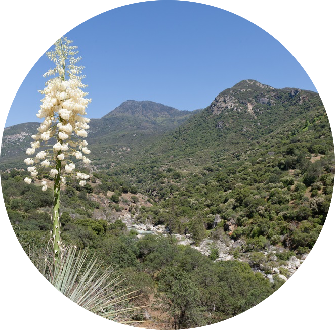

Chaparrals are found in most continents such as the
west coast of the United States, the west coast of South
America, the Cape Town area of South Africa, the western tip
of Australia and the coastal areas of the Mediterranean.
Each chaparral is different, some are flat plains while
others can have rocky hills and mountain slopes. Their climate
is usually very hot in the summer reaching a temp of 40˚C (104˚F) and in
the winter it's 10˚C (50˚K). Because of the weather droughts
and fires are very common in that area, but fortunately the animals and
plants adapted to the conditions. Chaparrals are getting destroyed by man made
fires and pollution, especially in California. The fires can be prevented but
as for the pollution there is no easy fix. But, we can start doing things
some everday tasks differently to help stop it from getting worse. Such as,
reducing our energy uses. Light energy really effects the animals in these biomes.
Start using energy efficient cars, carpooling.